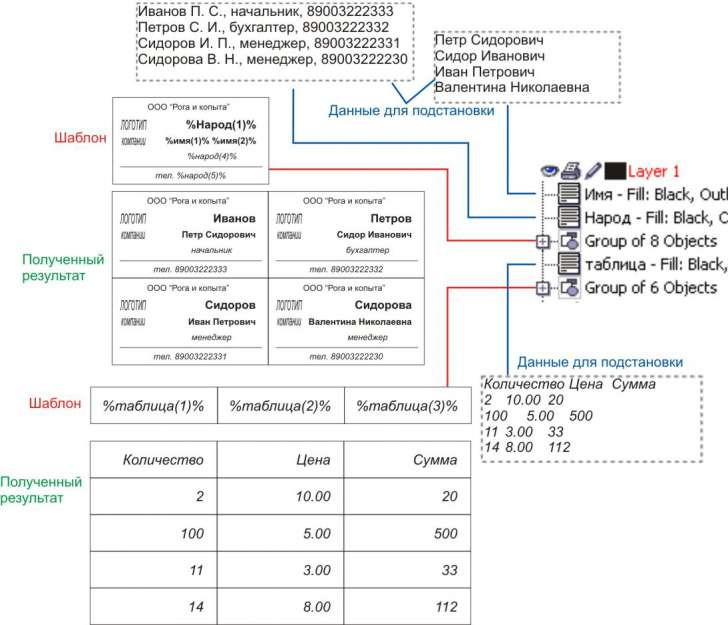
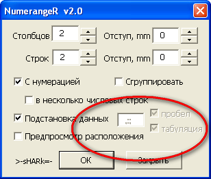
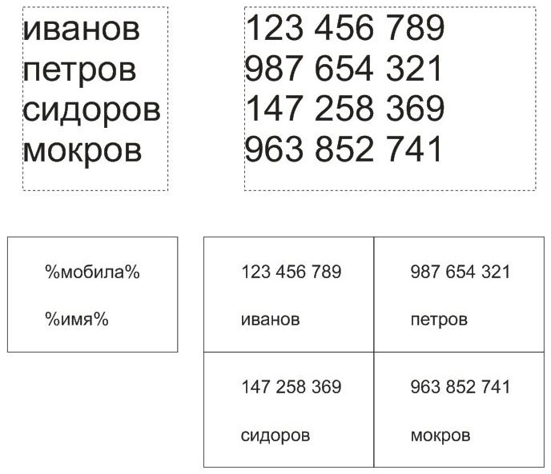

Подстановка данных
Работа дизайнером это не всегда вдохновенное творчество. Часто приходится заниматься рутинной работой, совершая одни и те же действия несколько раз. Макросы хорошо облегчают жизнь в этом понимании, но как правило, выполняют какую-то одну функцию. Например, заказчик утвердил вариант визитки и прислал список работников с должностями. Можно, конечно, "копи-пастить" вырезая из текста письма необходимые данные или набирать в каждой копии визитки текст заново. Или, как вариант, попробовать воспользоваться моим макросом Numeranger v2.0
Собственно говоря, принцип работы основных частей макроса подробно описан в другой теме (http://cdrpro.ru/forum/13-473-0-17), и можно было бы продолжить описание дополнительных функций там же. Но поскольку работа с переменными данными прямо не относится к "нумерации и размещению объектов", то в этой отдельной теме я и опишу как работает обработка переменных данных.
Итак, у нас есть список сотрудников, должности и телефоны.
Представлено это, скажем в виде
Фамилия И. О., должность, телефон
(любое сходство с настоящими именами, названиями и телефонами считать случайным)
1. Открываем макет визитки, создаем текстовый объект и заполняем его данными, скопировав их из текста письма или просто последовательно напечатав.
2. В менеджере объектов присваиваем этому текстовому объекту имя, например, Народ.
3. В макете визитки создаем три текстовых поля, куда будут подставляться значения.
В первом поле пишем %Народ(1)%, во втором %Народ(4)%, и в третьем %Народ(5)%. Это означает, что для первого поля будут браться значения из текстового объекта с именем народ, который мы создали в п.1. Цифра в скобках означает порядковый номер используемого слова. Для второго поля логичнее было бы использовать "двойку", просто макрос при выборе слова руководствуется символами-разделителями в виде пробела или знаков препинания, поэтому на цифру "2" макрос выберет букву имени, на "3" - букву отчества, на "4" - должность и на "5" соответственно телефон. Символ процента вначале и в конце указывает на использование слова-индентификатора, которое будет заменяться на подставляемое значение из очередной строки. Для каждого поля можно установить нужное выравнивание, влево, по центру или вправо.
Т.е. общий принцип: создаем текстовый объект, один или несколько, со строчными данными и даем ему имя, на которое будем ссылаться. Каждая строка - один набор данных для очередной копии визитки. В макете создаем текст, в котором указываем имя объекта, откуда берем строку данных, и индекс, указывающий какое слово из строки данных использовать и подставлять. При отсутствии индекса подставится вся строка целиком, при неправильном индексе получим предупреждение.
Предположим, что заказчик вспомнил полные имена и отчества своих сотрудников и прислал их новым письмом. Создаем новый текстовый объект, заполняем его именами-отчествами, и даем название, скажем, Имя. В макете визитки делаем текстовую ссылку на %Имя(1)%, как на имя сотрудника, и %Имя(2)% на отчество.
Т.е. наша визитка в качестве источника данных использует два текстовых объекта, содержащих необходимую нам построчную информацию.
Вот и все. Выделяем сгруппированный макет, запускаем макрос и радуемся. :)
На рисунке представлен результат работы макроса.

Подобным способом можно, например, заполнять таблицы.
Конечно, подставляемые значения могут быть различными по длине слов и некоторые могут вылезать за пределы визитки. Возможно в следующей версии макроса я добавлю возможность сжатия текста или уменьшения кегля шрифта.
По ряду соображений для нумерации и подстановки данных используются только текстовые объекты, входящие непосредственно в выделенную группу. Т.е. все вложенные группы, в которых также могут быть тексты с числами или идентификаторами - игнорируются. Содержимое поверклипов и символов также не учитывается.
Разумеется у любого макроса, помимо плюсов, должны быть и минусы. Есть они и в моем макросе. Он - бесплатный :)
Шучу, конечно, минусов хватает. Если в одной строке поставить идентификатор для подстановки данных и числовые данные для нумерации - обработается только идентификатор. Кроме того нумерация начинается со второй копии, а подстановка данных - с первой. Идентификаторы отделяются друг от друга пробелами, табуляцией и некоторыми знаками пунктуации, на окне макроса об этом указывают три заблокированных поля.
В общем, пробуйте...
Вникнуть трудно, нужно несколько раз и очень внимательно все перечитывать.
Да, а сам макрос что, в предыдущей теме остался? (Вопрос снят) Но лучше прикрепить этот макрос сюда тоже.
Текста действительно многовато, попытался максимально подробно описать логику работы. Макрос прикрепил.
Как поменять работы с возвратом на шаг назад?при включении макроса в независимости сколько ты его использовал при нажатии Cntrl+Z возвращает не на шаг назад, а на самый первый раз после включении макроса...
исправлю в следующей версии, которую выложу чуть позже. В новой версии добавил две удобные фишки: превью теперь работает и для размещения нескольких выделенных объектов, показывая где и как они расположатся. Кроме того появилась функция автоподбора, нажимаете кнопочку, мышкой рисуете пунктирный прямоугольник, после этого в полях Столбцы/Ряды/Отступы появляются соответствующие значения, и превью показывает, как расположатся объекты внутри отмеченного прямоугольника.
Работает отлично. Уважуха... :)
Есть тока маленькая проблема: не могу снять галки "Пробел" и "Табуляция". Я так понял они заблокированы. Предполагается их функционирование? Весьма не хватает данной функции.
Ну не хочет заказчик дефисов в телефонном номере - хочет пробелов :(

хм, как-то не задумывался о пробелах...
Макрос определяет пробелы, табы и несколько знаков пунктуации для разделения нескольких ключевых слов. В вашем случае можно список телефонов оформить отдельным параграф-блоком, дать ему имя, скажем, мобила, и подключить в макет в виде %мобила%. Макрос подставит всю очередную строку целиком, включая пробелы и др. пунктуации.

А возможно сделать так, чтобы макрос мог использовать для разделения ключевых слов только один (или несколько) знаков пунктуации которые укажешь? Ну скажем - добавить поля с галками "пробел", "запятая", "точка с запятой" и т.п., для того чтобы можно было выбрать.
Работать с несколькими блоками конечно можно, не спорю. Но как объяснить заказчику в каком виде предоставлять данные? Ну или потом эти данные надо перерабатывать, что так же чревато ошибками.
В случаеже с одним блоком все орфограыические ошибки в данных смело предъявляешь заказчику и.... Думаю идея понятна. :)
Макрос отличный. Не надо возиться с Excel. Создателю респект. Новых версий не появилось?
Shark, огромное спасибо за макрос. а вот как-то можно отжать кнопочку "пробел", оставив только "табуляция"? оооочень нужно ))
постараюсь выложить 3-ю версию в ближайшие дни. Там ряд нововведений, в том числе и отжатие кнопочек, поддержка шрифта, подстановка не только текстовых данных, но и любых объектов - картинок, например, и еще парочка новых "фишек"
Страницы